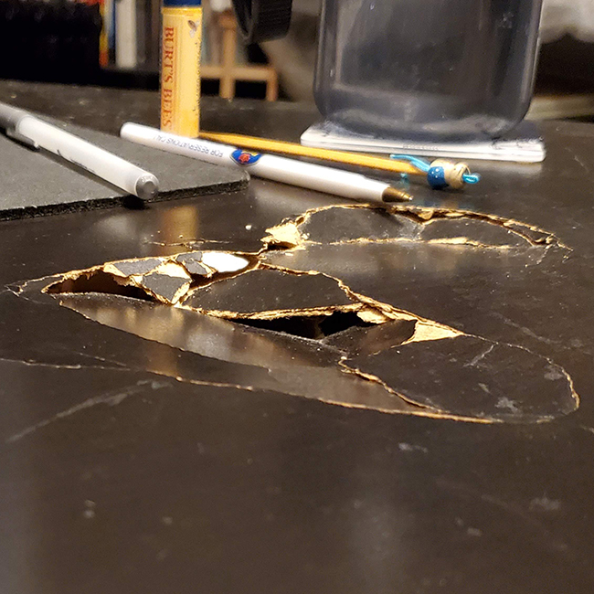
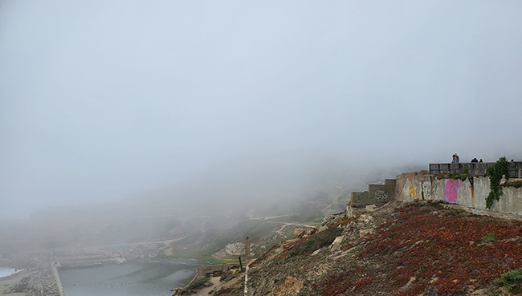

I originally took these as notes of cool looking things rather than 'art'. I've tried to make them more interesting by recropping though. I used square cropping unless I had a specific reason not to so I could use them for music covers if I ever get around to that. Taken with whichever smartphone I owned at the time





